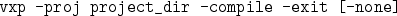

The compilation process in AVS/Express compiles all source code specified
in the user library, so when you compile you are in effect compiling the
entire user library.
To compile from within Express, click on the library version of a module with
source code, and select Compile from the Project pulldown
menu. (N.B. delete any active applications that contain your library modules
before doing so, or you will likely get an error).
To compile from the command prompt, use

Using -none keeps Express from popping up any windows (you still need a
valid DISPLAY variable set though!).
This seems to work fine on Solaris machines, but there seems to be bugs in the compilation process for SGI machines.
To compile on an SGI you need to follow these steps: